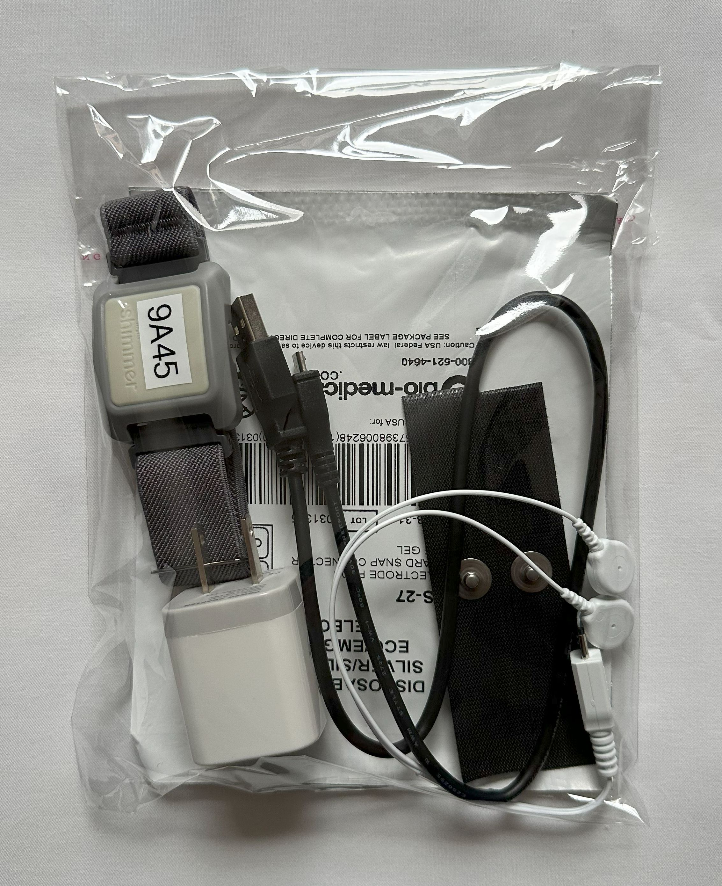

Welcome!
Thank you for being part of our research network!
On this page, you will find everything you will need to know in order to get started using our
hardware and software as you participate in our research network!
For new participants
If you are new to our research network, please start with SECTION 1 to
go over the package contents you have received from VGM. In addition, you must first follow the
2 steps highlighted below to get started.
Step 1: Pair DIRT watch with your computer (do once only)
See SECTION 2 for more
information on how to pair the DIRT watch with
your computer.
Step 2: Install the DIRT App
See SECTION 4 for more
information on how to install the DIRT App on your
computer.
For all participants
To participate in any of our research studies, please follow the process highlighted below to
get set up.
Step 1: Ensure your DIRT watch is fully charged
See SECTION 3 for more information on how to charge your DIRT watch.
Step 2: Connect the DIRT watch to the data collection cable
See SECTION 2 for more information.
Step 3: Apply the disposable sticky pads & connect the data collection
cable to the pads
See SECTION 2 for more information.
Step 4: Use the DIRT App to participate in a study
See SECTION 4 for more information.
SECTION 1: Getting Started
Package contents
Below is an image of the package you have received when you came into VGM's office.

What's in the package:
- 1 DIRT Watch
- 1 Data Collection Cable
- 1 USB Charging Cable
- 1 USB Wall Adapter
- 2 Packs of Stickies
- 2 Reusable velcro pads
⚠️ Warning: If you are missing any of the items listed, please
get in touch with us immediately!
DIRT Watch & Data Collection Cable
On the DIRT watch, you will notice 4 alpha-numerical ID. This 4-character ID is
very important because this is your Participant ID. You will need to
provide this ID every time you communicate with us moving forward. In the
example below, you will see the DIRT watch and data collection cable. The
Participant ID in this example is 9A45. If the ID label is peeling or
have fallen off, please let us know so we can take note of it.
💡
Note: To learn how to set up and use the DIRT watch,
please visit
SECTION 2.
Data Collection Sticky Pads & Reusable Velcro Pads
You are provided with two packs of gel stickies to use when participating in
our studies. Each pack contains 6 stickies as shown below. If you are about
to run out of these sticky pads, please inform us so we can send you more.
If you fully run out, you can use the re-usable velcro pads (shown below) to
participate in our studies before receiving more sticky pads.
💡
Note: To learn more about how to use these sticky
pads, please visit
SECTION
2.
💡
Note: To learn more about how to use the reusable
velcro pads, please visit
SECTION
3.
USB Wall Adapter & Charging Cable
You are provided a USB wall adapter and a micro-usb charging cable to use
with your DIRT watch. If you have lost or damaged the charging cable or
wall adapter, please let us know so they can be replaced.
💡
Note: To learn more about recharging the DIRT
watch, please visit
SECTION
3.
SECTION 2: Using DIRT Watch
Connecting the DIRT Watch via Bluetooth
Windows 10
Windows 11
Connecting the data collection cable
The data collection cable must be connected to the watch as illustrated
below. Please note that on the cable, you will see a "B" on the plug end
of the cable. The "B" side of the cable should face upward when plugging
it into the watch as shown below (same side as the participant ID label
on the watch).
⚠️ Warning: Please be careful when you are
plugging and unplugging this cable into the watch, as well as onto the
data collection pads. The cable is fragile! If the cable is ever
damaged, please let us know immediately!
Using the disposable sticky pads for data collection
In each pack of sticky pads, you will see 6 disposable pads. Each
time you participate in a study, you will only need 2 sticky pads.
To use these sticky pads, please apply them to your index and middle
fingers as illustrated below.
💡 Note: If your hand is sweaty and the sticky pads
fall off, you can always use another pair.
Once you have applied the sticky pads onto your fingers, you can
attach the data collection cable as illustrated below. At this
point, you are ready to participate in a study!
💡 Note: After you are done with a study, please
carefully remove the cable from the sticky pads and you can throw
away the sticky pads. Please do not reuse the sticky pads!
💡
Note: If you have run out of the disposable
sticky pads, please let us know to get more. You can also use the
reuseable velcro pads if needed. To learn more about the velcro
pads, please visit
SECTION
3.
SECTION 3: DIRT Watch Accessories
Charging your DIRT watch
To charge your DIRT watch, please only use the included micro-usb cable and USB wall
adapter.
You should charge your DIRT watch at least 4 hours before participating in a
research study. You will be given prior notice via the Telegram group when a
new research study will be released. Please use that information to determine when
you should charge your device so you can participate successfully.
When the device is charging, you will see a red LED light turn on like in the image
below.
When your DIRT watch is fully charged, you will see a green LED light turn on. When
this happens, the device is ready to use!
💡 Note: For best performance, please ensure your DIRT watch is
fully charged before participating in a study.
Using the reusable velcro pads during data collection
When you have run out of the dispoable sticky pads, you can use the re-usable
velcro pads before receiving more sticky pads from us. However, if you have
slimmer fingers, the reusable pads must first be trimmed down to fit your
fingers before using for the first time.
Preparing the velcro pads
In the images below, we illustrate how to cut down the velcro pads to size
when it is too big. In our example, we only needed to cut off a small piece
of the velcro from one side to make it fit. Once cut to size, the velcro pad
will fit snuggly onto your finger.
⚠️ Warning: When trimming down the velcro pads, please
do so sparingly so that you don't make it too small! They are
reusable so please do not throw them away!
Placement of the velcro pads
Once you have trimmed the velcro pads to fit your finger, you can wrap
them around your fingers as illustrated below.
Similarly to the stickies, please make sure the metal part of the velcro
pads are aligned in the middle of your finger and not obstructed by
anything behind it.In the image below, we illustrate that you should aim
to align the two red circles when putting on the reusable velcro pad.
Once you have both velcro pads wrapped around your fingers, you can
connect the DIRT watch to use when participating in a study.
⚠️ Warning: If the velcro pads is too big for your
fingers, the overlap could potentially obstruct the metal pad from
making contact with your finger. As such, please make sure to trim down
the velcro pad before using.
SECTION 4: Using DIRT Software
This is the content for SECTION 3. Add your instructions or details here.
SECTION 5: Troubleshooting
This is the content for SECTION 4. Add your troubleshooting steps here.